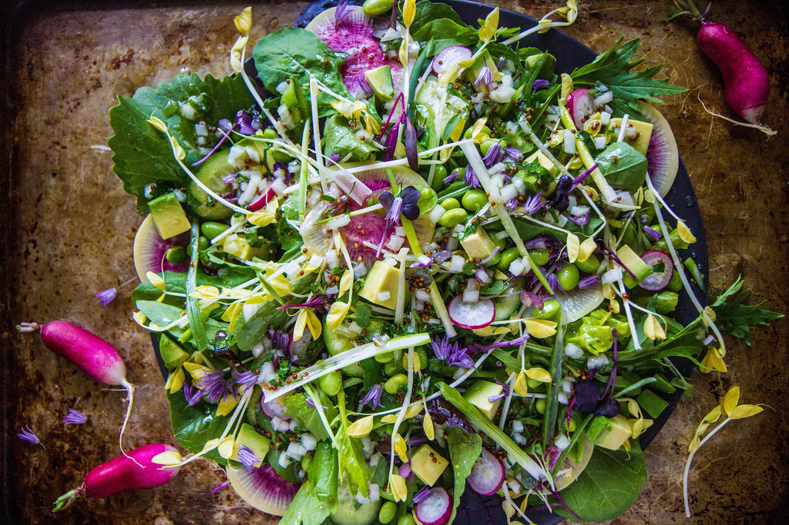

Green Goddess Salad

Description
I was recently introduced to green goddess salad dressing by my beautiful partner Bri and I am now obssessed with it. It's a great salad on a hot day, super refreshing
extra zesty and delicious. It goes especially great with some battered fish! I highly recommend it if you don't like salads much as I did, now I can't get enough!
Ingredients
- 2 cups mayonnaise
- 4 anchovy fillets, minced
- 1 green onion, chopped
- 2 teaspoons chopped fresh parsley
- 2 teaspoons chopped fresh chives
- 1 tablespoon tarragon vinegar
- 1 teaspoon chopped fresh tarragon
Steps
- Mix together mayonnaise, anchovy, green onion, parsley, chives, vinegar and tarragon.
- Refrigerate until ready to serve and pour over favorite salad or greens.